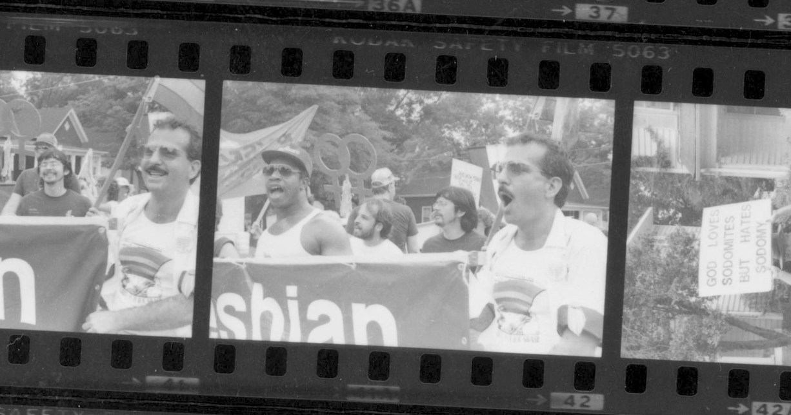
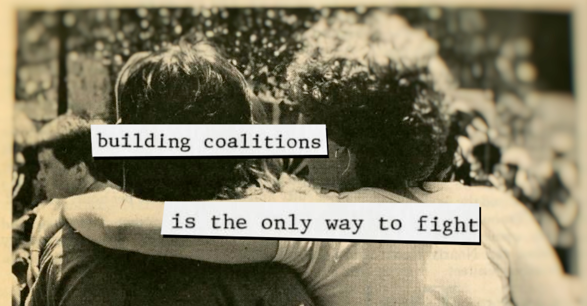
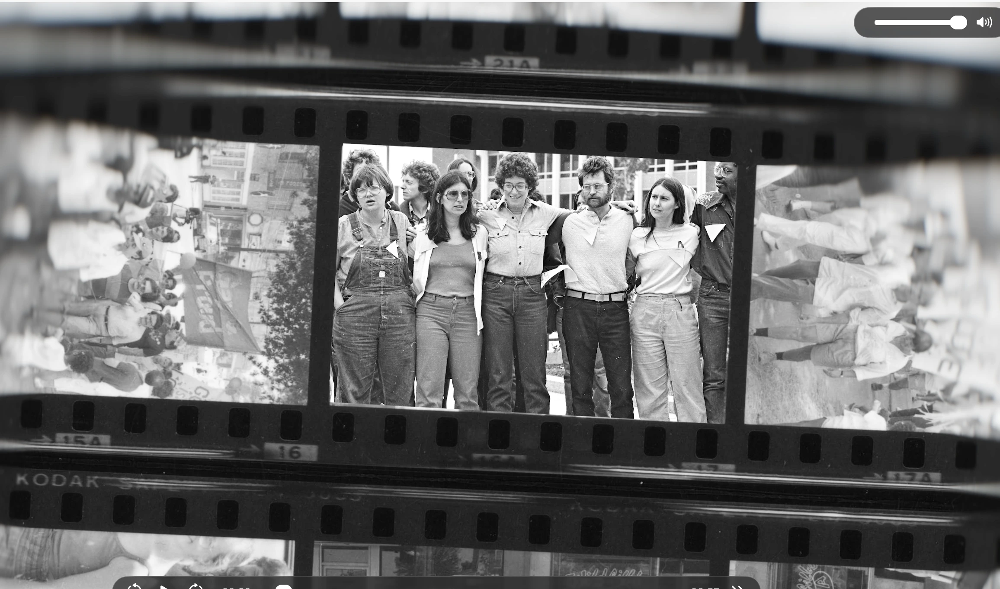
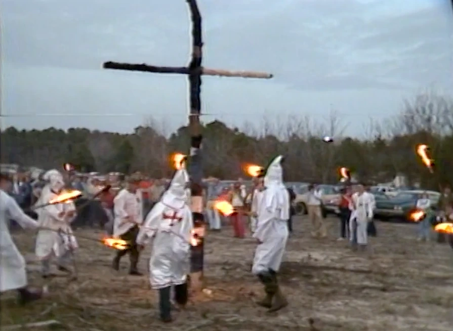
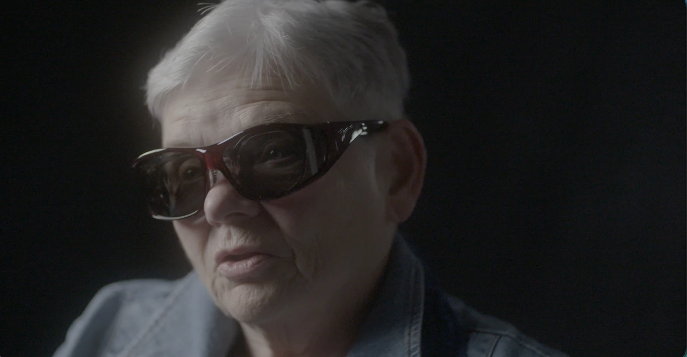
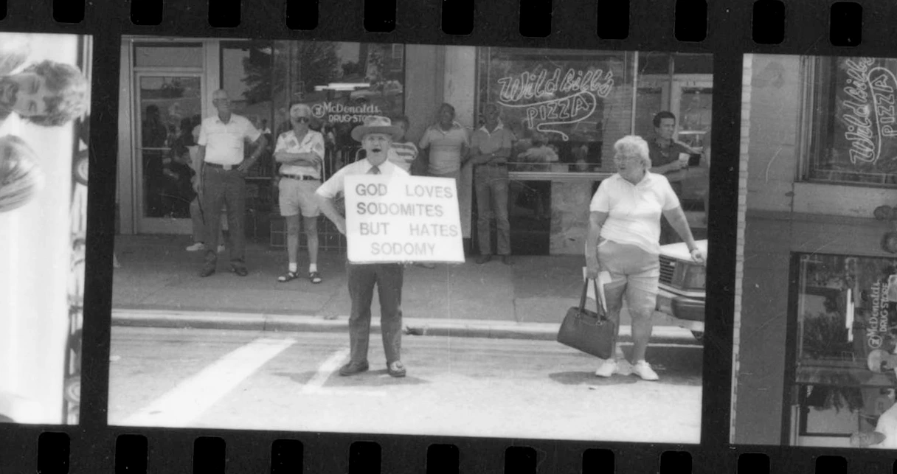
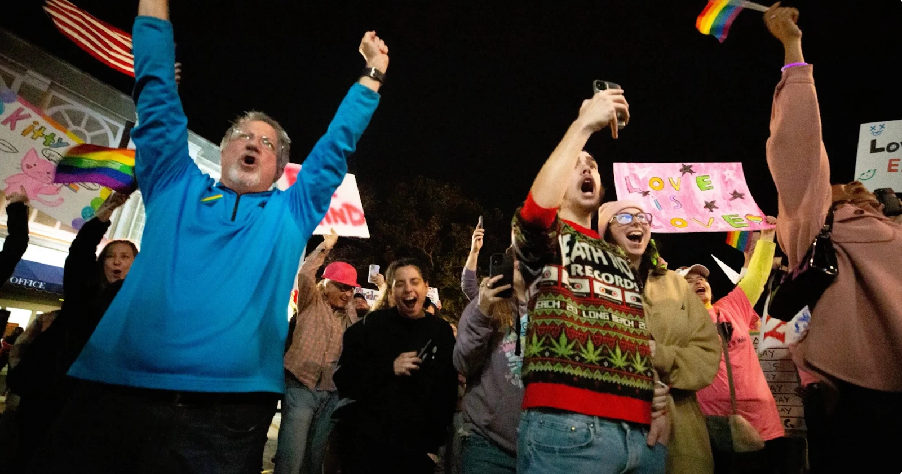
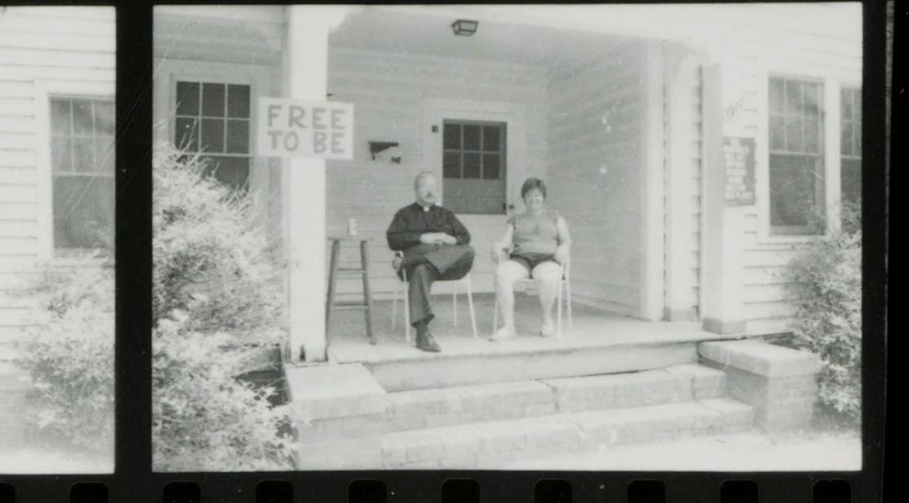

When a Southern mayor's support for gay rights sparks a fierce campaign to kick him out of office in 1986, an unlikely coalition of activists, clergy, and citizens must decide what kind of city Durham — and America — wants to become.

Synopsis
In 1986, Durham, North Carolina found itself at the center of a battle over equality, visibility, and belonging. After Mayor Wib Gulley issued an Anti-Discrimination Week proclamation supporting the city's lesbian and gay community, a recall campaign threatened to divide the city. The response—a powerful coalition of activists, clergy, civil rights leaders, and ordinary citizens—helped reshape Durham's future. Nearly forty years later, as new debates over identity, visibility, and civil rights emerge across the country, the legacy of that struggle continues to shape Durham and the people who call it home.
Full Description
1986: THE CROSSROAD FACING DURHAM tells the story of a pivotal moment when a Southern city was forced to decide who belonged in public life.
The roots of the story stretch back to 1981, when the murder of Ronald "Sonny" Antonevitch at Durham's Little River became a catalyst for North Carolina's first Pride march and a growing movement for LGBTQ visibility. Five years later, newly elected Mayor Wib Gulley issued an Anti-Discrimination Week proclamation alongside Durham's Pride events. What seemed like a modest gesture ignited a political firestorm. Religious conservatives launched a campaign to recall the mayor, newspapers denounced the proclamation, and the city became a battleground over civil rights, morality, and the future of the South.
What followed was extraordinary. LGBTQ activists joined forces with Black and white clergy, civil rights leaders, neighborhood organizers, elected officials, and ordinary citizens to build a coalition capable of defeating the recall effort. Their victory helped chart a new course for Durham—one rooted in inclusion, diversity, and public participation.
Through intimate oral histories, archival discoveries, and present-day stories of resilience and resistance, the film traces how a local political battle became a defining moment in Durham's evolution—and why its lessons remain urgently relevant today.
But the story does not end there.
Act III shows the audience that the film is not ending with a victory lap; it is examining the inheritance of 1986. Through contemporary voices—including artists, drag performers, organizers, clergy, business owners, and civic leaders—the film explores the Durham that emerged from those events. A vibrant queer community now thrives in a city known nationally for its diversity, creativity, and culture. Yet the forces that fueled the conflicts of 1986 have not disappeared. New threats, political backlash, and acts of anti-LGBTQ hostility reveal how fragile progress can be and how essential community remains.





